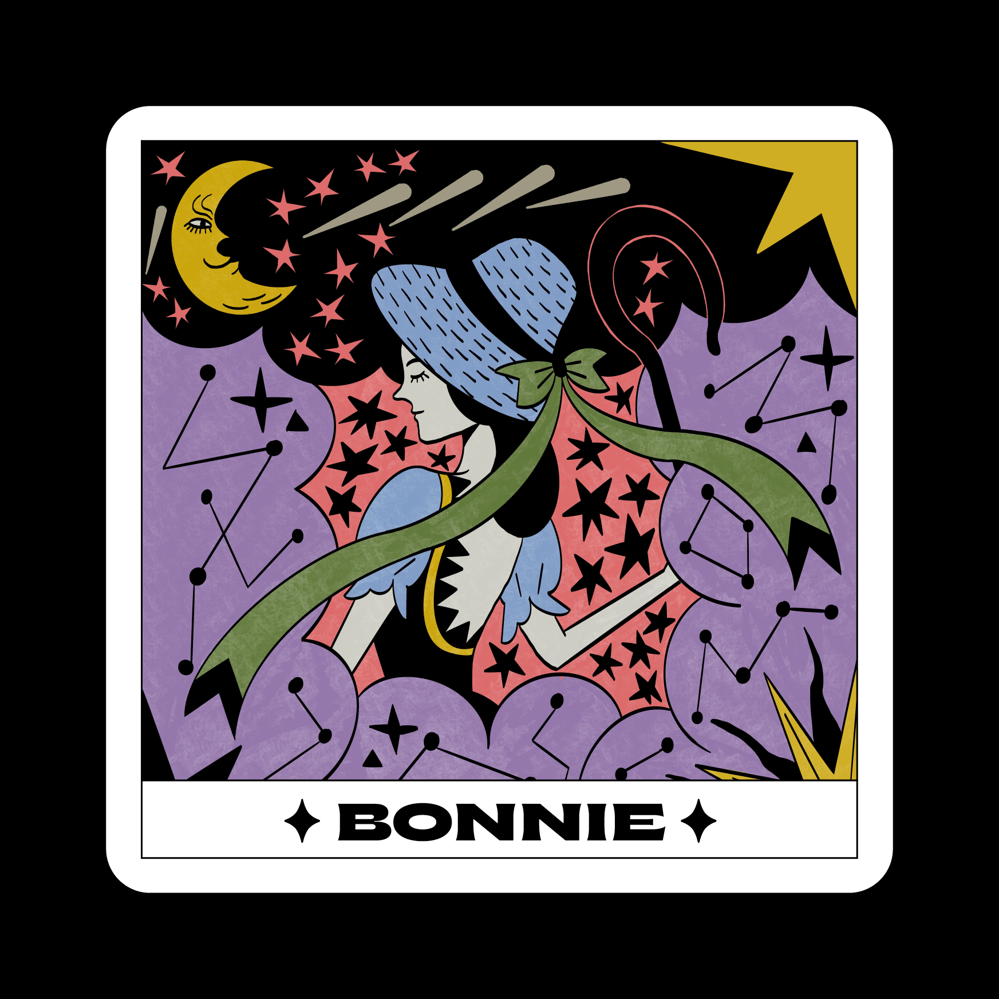

loading theater
this website loads faster on google chrome...
Theater always comes with music. So let me play you some gorgeous songs!
G’LAMS is a musical performed by the Hamlet of Art for high school students in
Hanoi, Vietnam.
With a burning passion for theatrical arts and orchestral music, we - the producing team - strive to
bring a novel, exhilarating, and humanistic experience to Vietnamese audiences.
This year, both the general director and music director of G'LAMS: "Ngay Do Bong Trang (Midday Moon)" are me.
